Meet the Sisters
Our Sisters
Read about each of our current Active Sisters and Advisor!
-
Adam Beaver
Adam is a junior from West Lafayette, IN studying Environmental and Ecological Engineering at Purdue University. He is also pursuing a minor in Environmental Policy. He is a percussionist, currently playing bass drum in the Purdue "All-American" Marching Band and also plays concert percussion in the spring. In TBS, he is part of the Cowbell family and the Mammal Neck candidate class. In his free time, Adam enjoys spending time with his friends, hammocking around campus, and going to the CoRec.
-
Aden Sinks
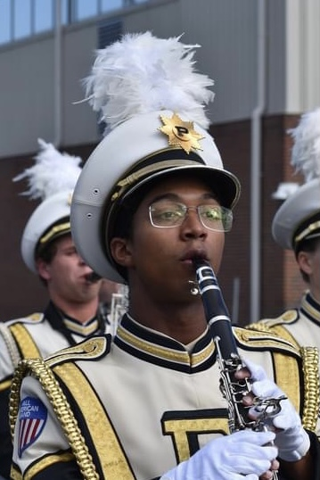Aden is a sophomore from Delphi, IN studying Acoustical Engineering at Purdue. He is in The Highlighters Membership Class and the Spice Rack family. He is a second-year member of the “All-American” Marching Band in the clarinet section. Outside of college, Aden enjoys hanging out with friends, listening to music, and watching racing.
-
Ava Gleason
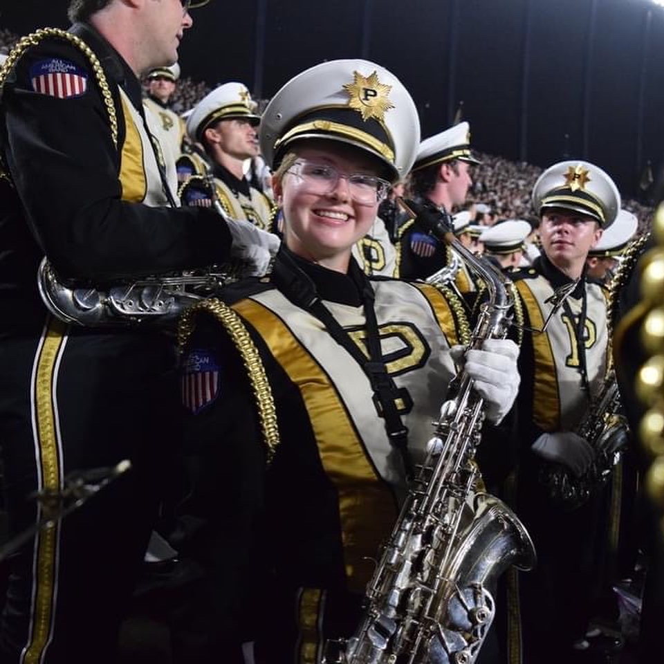Ava is a senior from Frankfort, IL studying Animation with a minor in Art & Design. They play the alto saxophone and is a member of the Baker’s Dozen class.
-
Brendan Bowns

Brendan is a 1st year graduate student pursuing his Master's of Public Health, is the advisor for Beta Sigma. He's from Birch Run, MI, and spent 4 years at Eastern Michigan University, where he received a Bachelor's of Science in Psychology & Human Sexuality. When he was in band, he was in the colorguard section. He was actively involved in the Gamma Rho chapter at EMU, and is both an Alumni and Life Member of Gamma Rho. After graduating, he plans to work on reform work regarding the sex education system. Outside of school, he enjoys spending time with his friends, and doing anything involving the bands!
-
Chris Fadel
Chris is a senior studying Mechanical Engineering at Purdue from Pembroke Pines, FL. He is a member of the Mammal Neck Membership Class and a Blue Celestial. He has played clarinet in the AAMB, Boiler Brass, and Wind Ensemble. On campus, he is also involved as a mentor for underclassmen in Mechanical Engineering and has worked in the ME Machine Shop. After graduating, he is planning to go work as a manufacturing engineer. Outside of school, Chris loves spending time with friends and watching racing!
-
Chris Thode
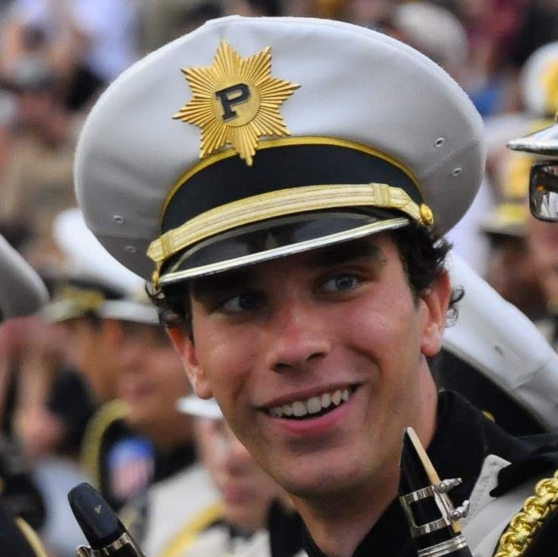Chris is a 5th-year senior studying Electrical Engineering from Columbus, Ohio. He is a member of the W.F.M.S. (Sp'18) candidate class, and of the Mohtin Goats family. He is a clarinet player in the AAMB, Box Band, and GABS. In chapter, he serves as the Services head, and has been very busy this year with some major AAMB props projects. After graduation, Chris will be working as an electronics engineer at GE Appliances in Louisville, Kentucky while earning his Master's degree in Electrical Engineering from the University of Louisville.
-
Dylan Sturdivant
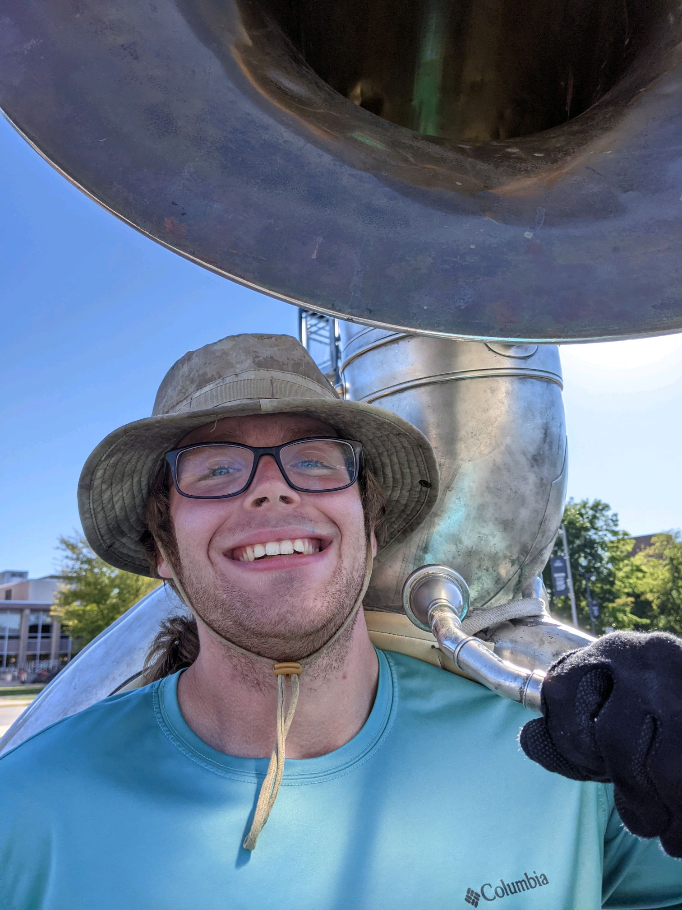Cher is a senior studying Actuarial Science and Applied Statistics at Purdue from Peru, IN. He is also pursuing minors in Economics and Management. He is a member of Mammal Neck and is a Velvet Bowtie. He is a tuba player currently in the All-American Marching Band. He is also involved in the Gold and Black Sound and Boiler Box Band. After graduating, he is planning to work as a financial analyst. Outside of school, Cher loves playing video games, exercising, and cooking.
-
Emily Jones
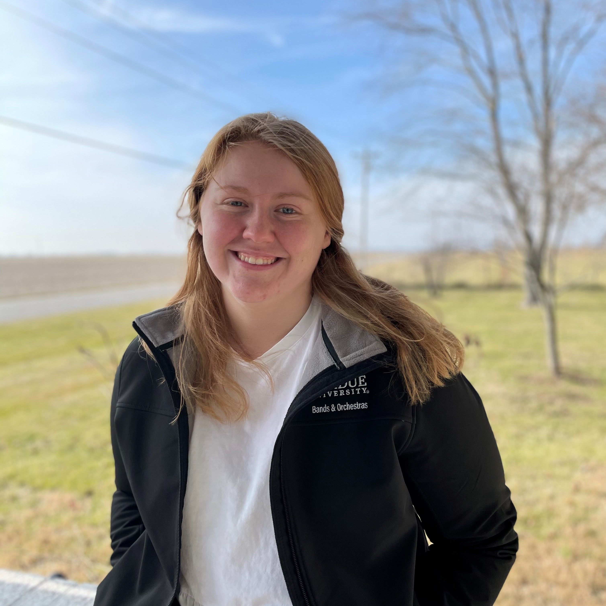Emily is a junior studying Actuarial Science and Applied Statistics and minoring in management at Purdue from Hope, IN. She is a member of the Highlighters Membership Class and the Velvet Bowties family. She is a clarinetist in the Concert Band. She is also a member of the clothing VMT. After graduating, she plans to work in the insurance industry. Outside of school, Emily enjoys hanging out with her friends and watching the movie Cars (which she has seen over 20 times).
-
Grace Bolten
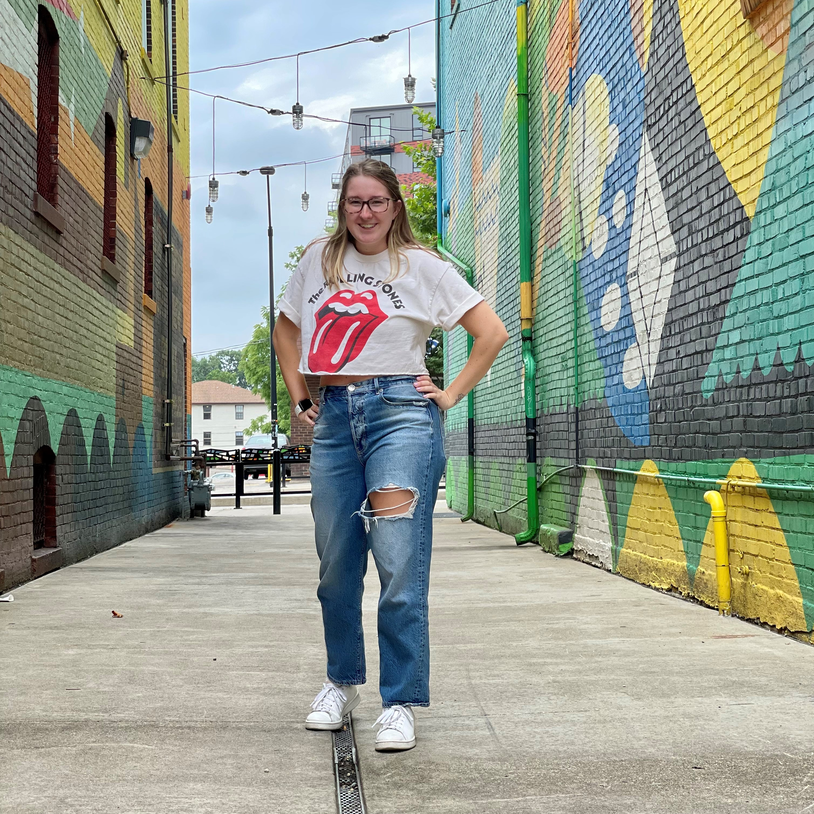Grace is a junior studying agricultural economics with a minor in data driven agricultural. She is from Indianapolis, Indiana. Grace joined Tau Beta Sigma as a sophomore in the Highlighters class and is a part of the Pink Roses family. In PBO, she is a clarinet student leader in the All-American Marching Band and a member of the IDEA VMT. After graduating, she hopes to work with an agricultural company on improving food security. Outside of school, Grace enjoys hiking and reading.
-
Hannah Penrod
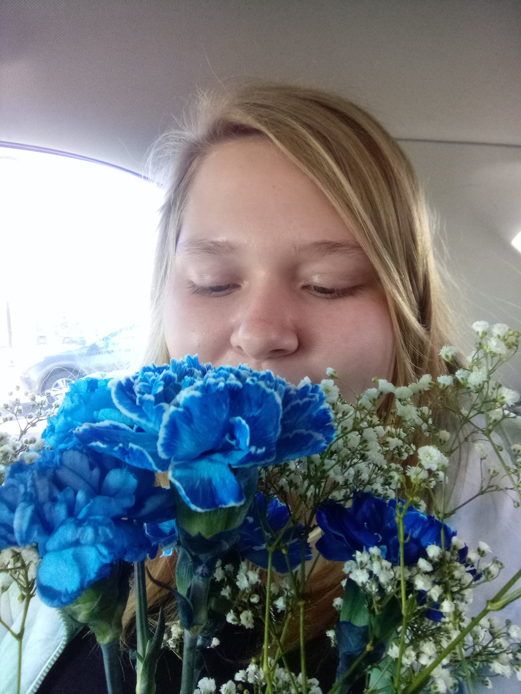Hannah is a sophomore studying Cell, Molecular, and Developmental Biology with a minor in Spanish for the Professions. She is from Indianapolis, Indiana and is looking to go into pre-med. She is a part of the Highlighters Membership Class and is a descendant of the Daisy family. Hannah has played the oboe for 5 years, and she also carries the University of Wisconsin B1G Flag in the AAMB. She loves serving others and helping anywhere she can, especially her fellow sisters in the bond. She loves spending time with her friends outside of classes and the occasional reading and relaxing whenever she gets the chance.
-
Jared Edwards
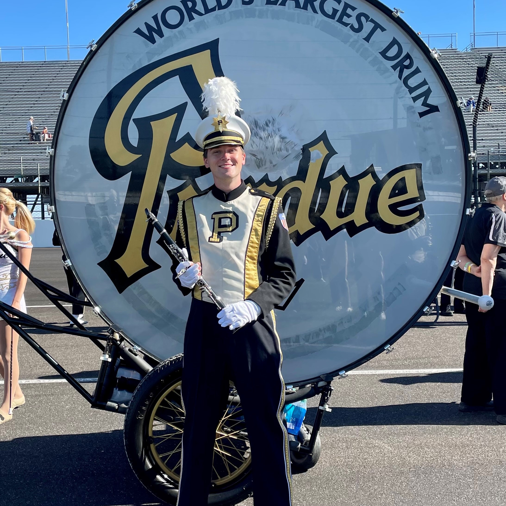Jared is a senior studying aeronautical and astronautical engineering from Libertyville, IL. In addition he is pursuing a minor in Spanish as well as being a member of the Honors College. He is a member of the cowbell family and is a part of the Baker's Dozen membership class from spring 2019. He also is currently serving as the Vice President of Operations for the chapter. In terms of band activities, he is currently playing the clarinet in the "All-American" Marching Band as well as participating in the Boiler Box Band. After graduation, Jared plans to work for an aerospace company ideally in an aerostructures role.
-
Karina Hollis-Brau

-
Kendra Gadberry
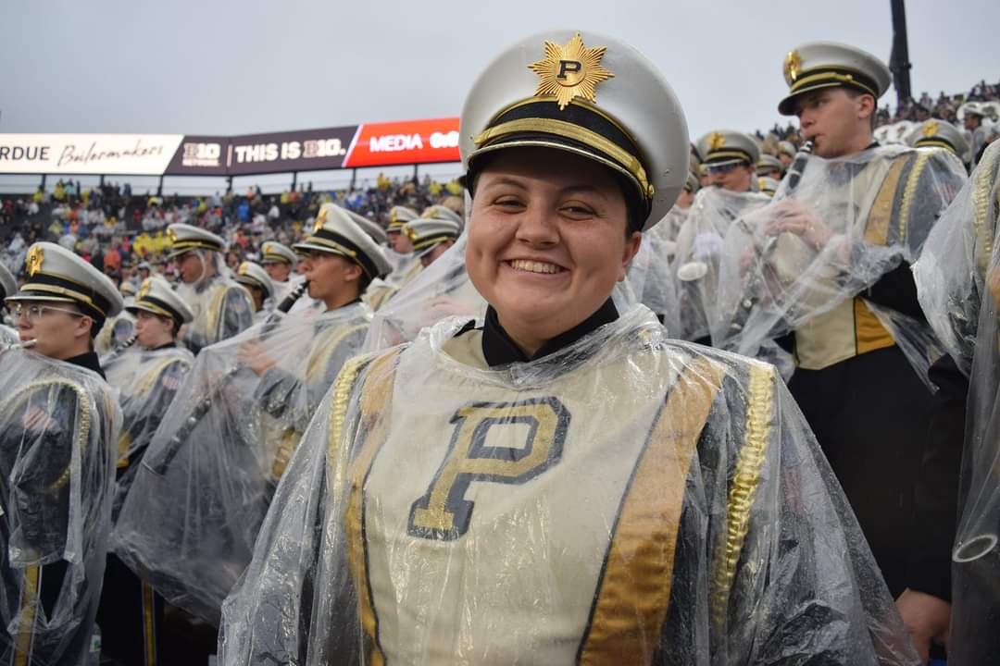Kendra is a senior studying Family & Consumer Sciences Education at Purdue. She is from Bloomfield, IN. She is a member of the Bakers Dozen Membership Class. She is a Big Ten Flag in the "All-American" Marching Band and plays the clarinet in Boiler Box Band, the women's volleyball pep band. On campus, she is involved in several church organizations including RUF, CSC, and the Wesley Foundation. After graduating, she is planning to teach Family & Consumer Sciences at a middle school and/or high school. Outside of school, Kendra loves spending time with friends, family, and her cat Charlie Joe.
-
Krupa Patel
Krupa is a junior studying Psychological Sciences at Purdue from Plainfield, IN. She is also pursuing a minor in Human Development and Family Services. She is a member of the Highlighters Membership Class and part of the Motin Goat family. She plays the Flute/Piccolo, and currently in the All American Marching Band, as well as Gold and Black Sound. On campus, she is involved with the Japanese Phonetics Club, Purdue Bands and Orchestras Ambassador, and also involved in PBO’s volunteer management team. After graduating, Krupa plans on going to graduate school to continue her education. Outside of school, Krupa loves spending time with friends and learning new things
-
Macaylee Allison
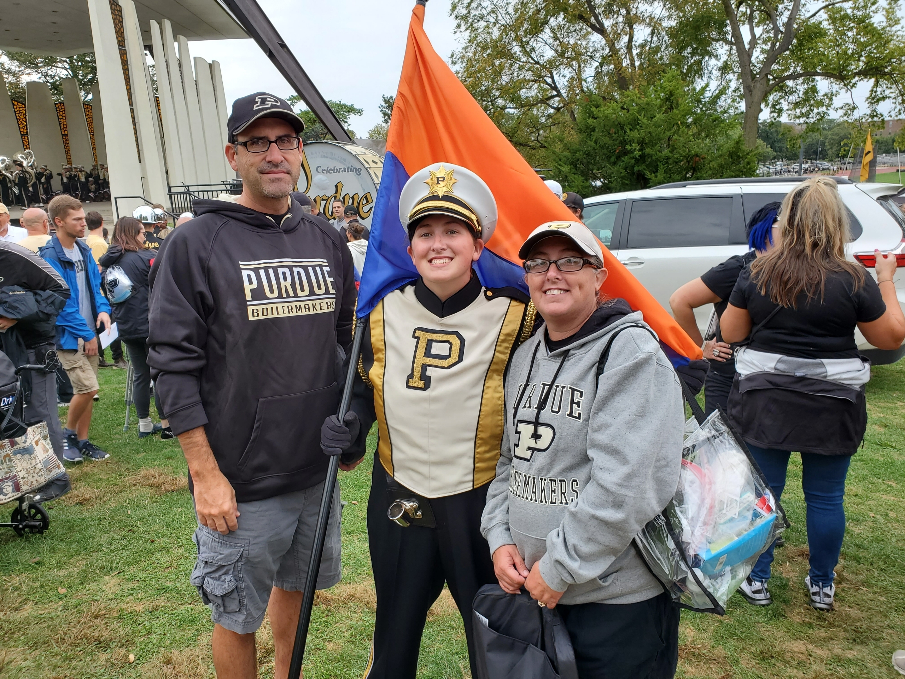Macaylee is a sophomore studying Elementary Education with a concentration in STEM. She is from Avon, Indiana. He is a member of the Highlighter class and is a Mohtin Goat. She is a big ten flag in the AAMB. After graduating she plans to go to be a teacher at an elementary school and then work towards getting her masters. Outside of school, she is a member of Purdue's Women's Rugby team. She enjoys reading and watching movies.
-
Marissa Okeley
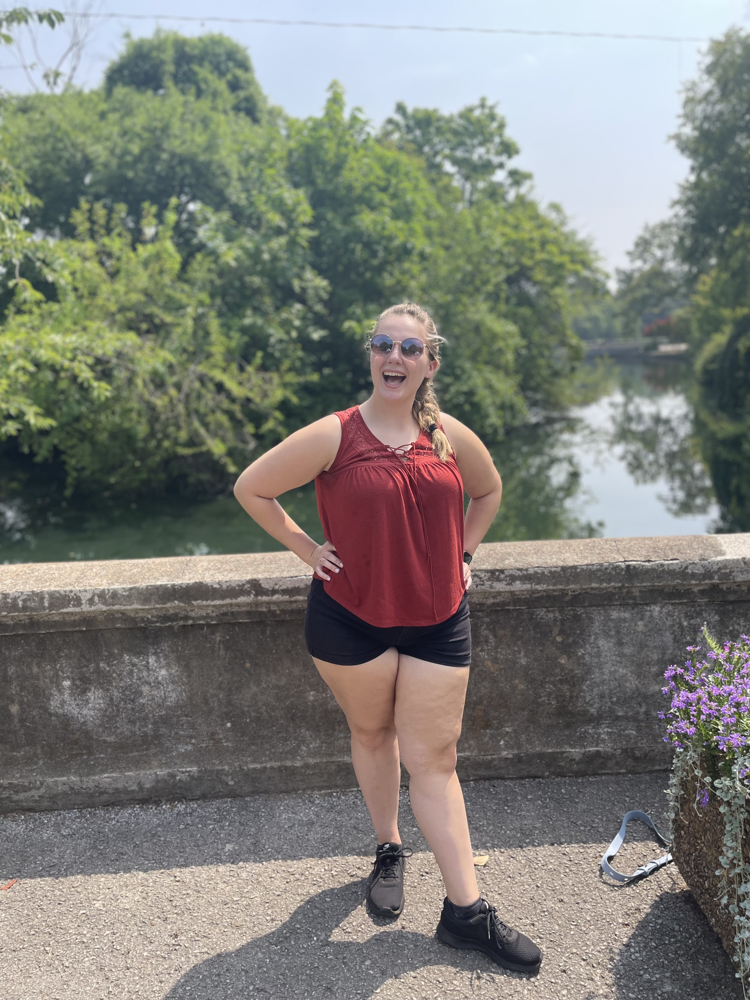Marissa is a senior studying biomedical health sciences with a minor in human development and family studies and is from Crown Point, IN. She is a member of the baker's dozen membership and is part of the pink roses family. Marissa plays the trumpet and marches the northwestern flag in the AAMB. Marissa also is in boiler box band and GABS. Outside of band, Marissa is a member of the period project, and she enjoys cooking and baking in her free time. After graduation, Marissa plans to apply to graduate school with a goal of becoming a physician assistant.
-
Michael Porter

Michael is a junior studying Mechatronics and Robotics Engineering Technology from South Bend, Indiana. Michael marches with the Big Ten Flag Section of the marching band and plays alto saxophone in Box Band and the spring ensembles. In Tau Beta Sigma, he serves as the Vice President of Membership and as a member of the membership committee. Michael loves getting spontaneous dinner plans with his TBS sisters after chapter meetings!
-
Misa Rodriguez
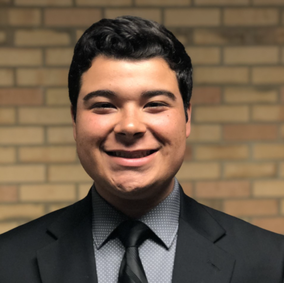Misa is a senior studying Industrial Engineering at Purdue University from Brownsburg, IN. He is a member of the Highlighters Membership Class. He is a clarinetist, currently in the Purdue All-American Marching, Boiler Box Band and Boiler Brass. On campus, he is also involved in the Latinos in Engineering and Science Organization (MAES) and the National Society of Black Engineers (NSBE). After graduating, he is planning on working in a tech company as a Program Manager. Outside of school, Misa enjoys watching tv shows, hanging out with friends and playing Valorant.
-
Renee Wesling
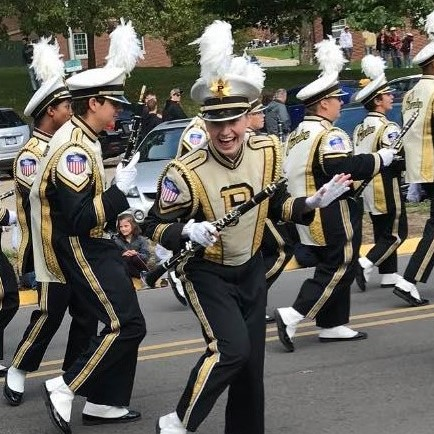Renee is a senior at Purdue from Lombard, IL. Here she is pursuing a degree in Biomedical Engineering with a minor in Anthropology, on track to graduate in May of 2022. In TBS, she is a member of the Baker's Dozen Membership Class and the Spice Rack family. She plays the clarinet in the AAMB and Box Band. Outside of class she enjoys attending Purdue sports games, biking, and spending time with friends. Her favorite TBS memory is attending district convention in Bowling Green, KY.
-
Trevor Ladner
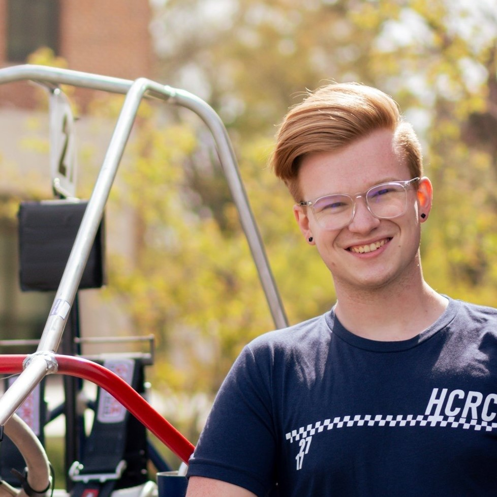Trevor is a senior studying Mechanical Engineering at Purdue from South Lyon, MI. He is also pursuing minors in Intellectual Property Law, Political Science, and Engineering & Public Policy. He is a member of the Highlighters Membership Class and a Blue Celestial. He is a percussionist, currently in Collegiate Band. On campus, he is also heavily involved in the Purdue Grand Prix and Mechanical Engineering Ambassadors. After graduating, he is planning to go work for an automotive company as an Interiors Engineer. Outside of school, Trevor loves spending time with friends and watching racing!
-
Zach Hedge
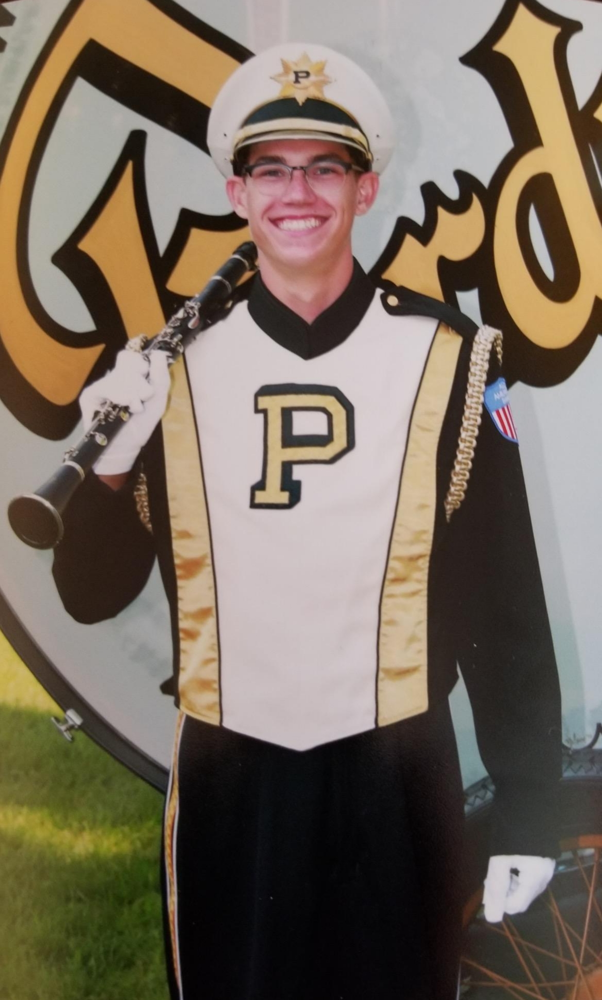Zach is a fifth-year senior studying Law and Society and has finished a minor in Forensic Science at Purdue, and he is from Crown Point, IN. He is a member of the Mammal Neck Membership Class and is in the Spice Rack family. He plays clarinet in the marching band and bass clarinet in concert band. After graduating, he is planning to work in law enforcement at a federal agency or to continue his studies in forensic science. Outside of school, Zach enjoys watching sports and playing golf.